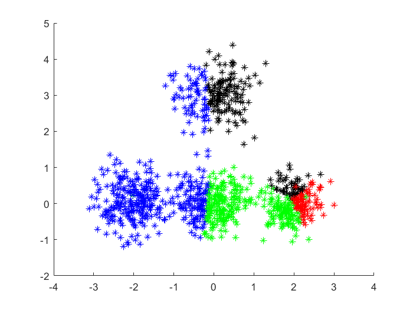
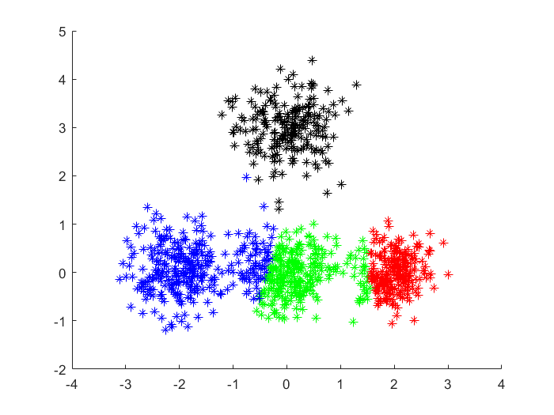
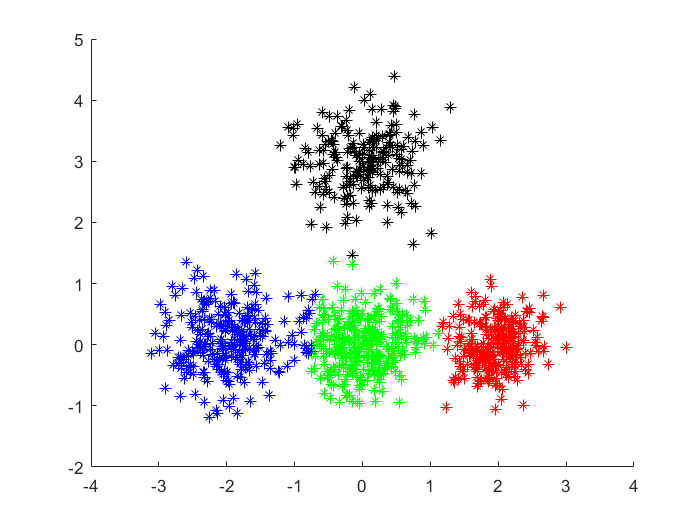
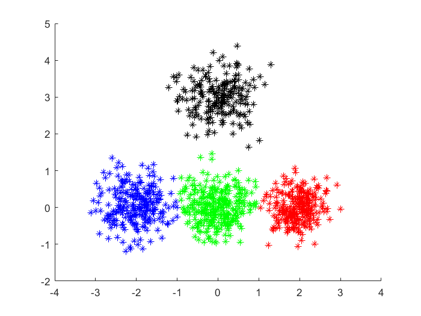

X=y';
n=size(X,2);
disp(n);
K=4;
randInd=randperm(n,K);
C_means=X(:,randperm(n,K));
disp(C_means);
colorspec = {'k','b','r','g','y',[.5 .6 .7],[.8 .2 .6]};
Dist=zeros(K,n);
oldC=zeros(2,K);
cont=1;
maxIter=20;
t=0;
while(cont)
t=t+1;
Clusters=zeros(K,n);
Centroid=zeros(1,K);
figure(t);
for i=1:n
for j=1:K
Dist(j,i)=sqrt((C_means(1,j)-X(1,i)).^2+(C_means(2,j)-X(2,i)).^2);
end
minim=0;
for j=1:K
if (minim==0)
minim=Dist(j,i);
position=j;
end
if(Dist(j,i)<minim)
minim=Dist(j,i);
position=j;
end
end
Clusters(position,i)=1;
Centroid(position)=Centroid(position)+1;
hold on
plot(X(1,i),X(2,i),'Color',colorspec{position},'marker','*');
end
for j=1:K
oldC(:,j)=C_means(:,j);
end
C_means=zeros(2,K);
for j=1:K
for i=1:n
if(Clusters(j,i)==1)
C_means(:,j)=C_means(:,j)+X(:,i)/Centroid(j);
elseif (Centroid(j)==0)
C_means(:,j)=oldC(:,j);
end
end
end
cont= (C_means~=oldC) & t<maxIter;
end
hold on
h2 = plot(C_means(1:2:2*K),C_means(2:2:2*K),'ko');
disp(C_means)
1000
2.0408 -2.0162 2.2945 1.6803
0.4660 0.2242 0.1854 -0.0899
0.0261 -2.0305 1.9576 -0.0331
3.0006 0.0677 -0.0112 0.0138
   